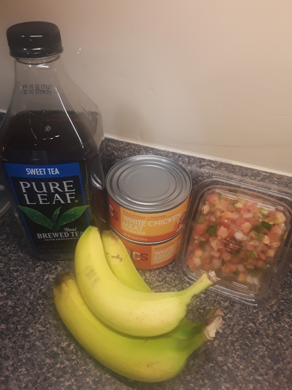

Cutting Recipe $10/day
1050 Calories per day meal prep
This recipe is designed to cut body weight by -1% body fat per week.
It works out to roughly 1050 Calories per day.
Makes four meals weighing about 6 ounces each,
includes three bananas for snacks,
and 10 ounces of iced tea mixed with 54 ounces of water.
Ingredients
- Two 12.5oz cans of premium chunk white chicken meat in water[Price Chopper]
- 10oz fresh salsa[Big Y]
- Three small bananas around 16oz combined weight
- 10oz Pure Leaf sweet iced tea
- 54oz water
Steps
- Mix the chicken and salsa into 4 equal servings.
Approximately 3.2oz chicken and 2.5oz salsa.
Comes to about 5.7oz per serving. Ideally to be eaten 4 hours apart.
- Combine 10oz of iced tea with 54oz water and drink 1/4 with each meal
- Eat one banana 2 hours after each meal